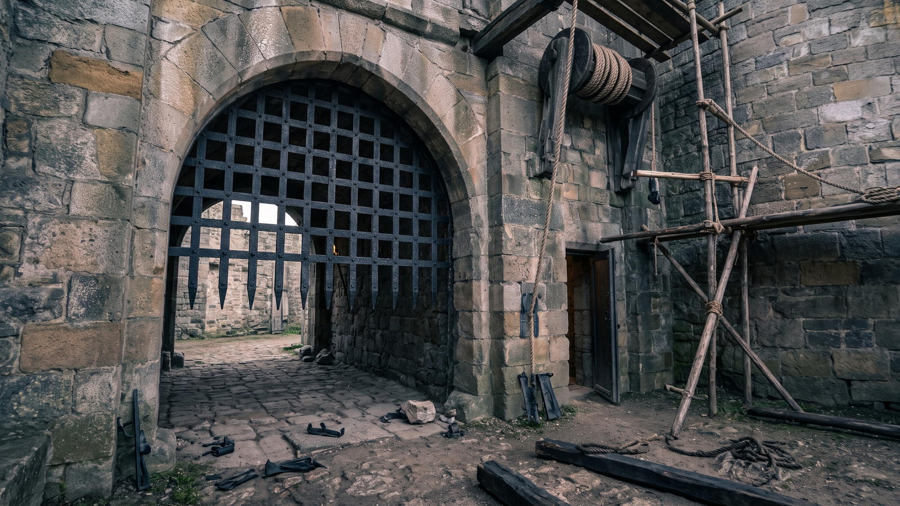

Stand the watch
chmod +x ssh.sh ./ssh.sh
The script needs Arch Linux and sudo, plus openssl and ip from iproute2. If openssh is missing it installs it with pacman. It asks two questions before anything changes:
- A port, defaulting to 25 if you just press enter. It must be a number from 1 to 65535; anything else stops the script.
- A username for the one guest. Lowercase letters, digits, hyphens and underscores, starting with a letter or underscore, at most 32 characters. Naming an account that already exists on the machine is refused up front, in those words, before anything is touched.
For that guest it sets a random password, openssl rand -base64 12, twelve bytes of openssl randomness in base64. The password is printed in the connection details at the end and stored in no file.
The hardened configuration
Before writing anything, the script copies the existing /etc/ssh/sshd_config to /etc/ssh/sshd_config.bak; on a rerun, a backup that is already there is kept rather than overwritten with the hardened file. Then it writes a configuration that assumes the gate is the target:
- Root login disabled. Password authentication enabled, for the new guest.
- Empty passwords refused. Agent forwarding, TCP forwarding, tunnel devices and X11 forwarding all disabled.
MaxAuthTries 3andMaxSessions 3: three guesses, three sessions, no more.- A 30 second login grace time, then the door closes on anyone still fumbling.
- A restricted cipher list,
chacha20-poly1305@openssh.com,aes256-gcm@openssh.comandaes128-gcm@openssh.com, and a restricted MAC list,hmac-sha2-256-etm@openssh.com,hmac-sha2-512-etm@openssh.comandumac-128-etm@openssh.com.
The new configuration is checked with sshd -t before anything restarts. If the check fails, the backup is restored and the script stops rather than leaving a broken gate.
The way in, printed once
With the configuration proven, sshd is restarted and enabled, and the script prints the connection details: the machine's addresses with loopback left out, the port you chose, the username, and the one time password. From there the guest comes in with any SSH client; the README names Termius on phones and tablets and Prompt 2 on iOS as the clients it had in mind. While the server stands, that printed page is the only key in the world.
Ctrl+C, and it was never there
The cleanup trap is registered before anything changes, and it only undoes stages that actually completed, so interrupting early never tears down something the run did not build. On Ctrl+C (SIGINT) or SIGTERM it runs in order: the guest's sessions are killed, the user and home directory are deleted, sshd is stopped and disabled, and the backed up configuration is restored. The gate returns to the wall it was before the visit, and the README's own todo list (logging, an IP blacklist, a WiFi restriction, a persistent folder option) is left for a future watch.
The gatehouse at first light

An honest limit, stated the way the campaign's completion pass found it: the script has not been run end to end, because that needs an Arch machine and sudo. What stands behind it is a syntax pass, bash -n, and the static checks in test_ssh_static.py, run under python3 -m unittest, which pin the hardened configuration values and the cleanup behaviour. The design is the promise; the checks are what has been proven so far.